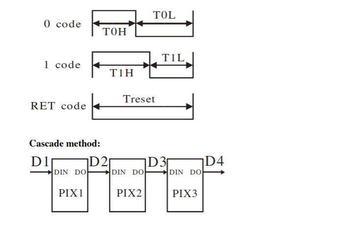
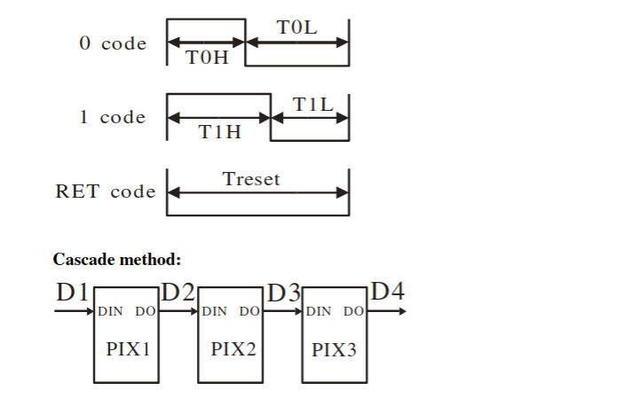
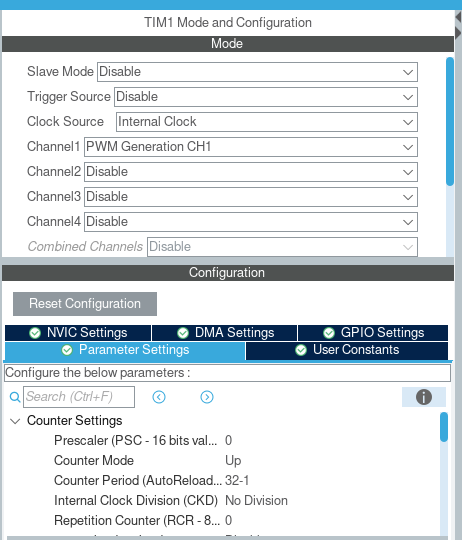
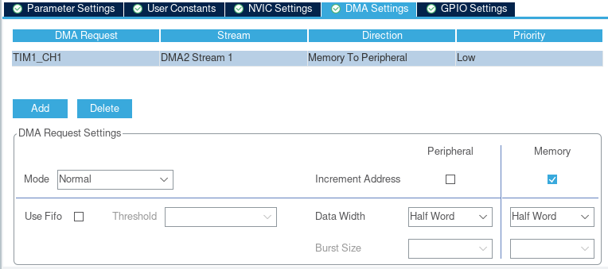
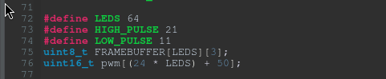
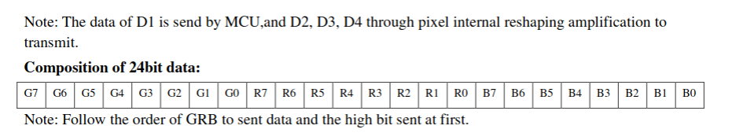
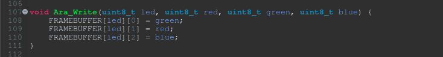
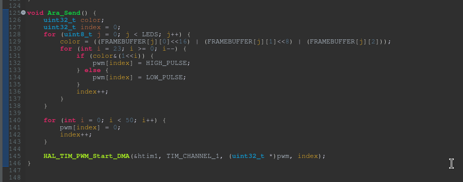
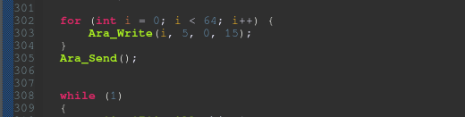

Puppy visor part one: WS2812b LEDs on STM32F411
2025-01-26Hi!!
It wanted to talk about a project It's currently working on: a visor! You probably know what protogens are - you can think of this project as of something similar to a protogen, but way simpler (it thinks?)!
It wants a puppy muzzle with electronics installed in it which include:
- two 8x8 WS2812b LED matrixes for the eyes
- a MPU6050 Gyroscope and Accelerometer
- A touch button
- one 4x4 WS2812b LED matrix for the mouth
It actually already built a working prototype (at least the electronics)! And one of the thingies that was MOST difficult to interface with were the WS2812b matrixes! For the prototype, this one used a library it found on github, but it proved to be very, very troublesome to work with on a bigger scale.
What it wants is:
- being able to refresh the framebuffer for the matrix
- clear the matrix
- display animations on the matrix
While the aforementioned library worked, interfacing it with puppy's code was extremely difficult and produced very nasty code with many, many hacks. Since this one wants the visor to be puppy's first BIG project, it wants the code to be as clean as possible, no place for dirty hacks!
Another issue was that this library was the only piece of code it has not written itself, which it felt bad about. It always wants to understand every piece of equipment it uses, and since STM32F411 is this one's first bigger MCU it wants to learn, and it's not going to learn if it uses libraries for stuff!
WS2812b LEDs
!!!
Lets finally talk about the main topic of this article - the WS2812b LEDs :3
 

Those are timing diagrams for the WS2812b LED. Each LED takes 24 bits of data, and each bit is a signal that lasts 1.25us
For example, if we want to send a logical zero, we want to keep the signal high for 0.4us and low for 0.85us
And if we want to send a logical one, we want to keep the signal high for 0.8us and low for 0.45us
After each 24 bits we need to send a low signal for at least 50us, it's very important!! If we don't send this signal after each 24 bits (or the signal we send is too short) it can confuse the WS2812b and produce MIND BOGGLING EFFECTS
WS2812b after you send it incorrect reset signal:

As you can see, each LED has a DIN and DOUT pin, they're all connected to each other! This allows us to use only one wire to drive those LEDs, quite neat!!!!!!!
To create such specific signals we'll have to use Pulse Width Modulation, and we will throw DMA in here for good measure as to not block the MCU :3
Timer configuration!
Here it will configure TIM1 for PWM and DMA :3
One important info: Puppy's STM32F411 runs on external oscillator built into its blackpill (25MHz). Given you use a different oscillator or a different clock speed, you'll have to use different values for counter period and other values in order to send correct signals to WS2812b!!!
And that's literally it when it comes to timer configuration :3 Now lets look at DMA!
We must remember to set direction as Memory to Peripheral since we're sending data from our MCU to the matrix :3 We also use normal mode and data width of half-word.
And... That's actually it when it comes to configuration! Lets write some code already :3c
Code!!!! We're writing code!!!!!!!!
Do keep in mind that this is a very general way of interfacing with WS2812b! You'll probably have to introduce interrupts for transfer completion to be able to do more complex things ^^
Lets start by defining our framebuffer :3c
Your immediate question might be: why is FRAMEBUFFER an array of 3-length arrays? If we look back into the WS2812b datasheet, we can see this:
As we can see, those 24 bits are composed of three parts for green, red and blue! All of those are made of 8 bits, and our framebuffer just holds data for those different colours, for each LED! Also remember that WS2812b accepts this data from MSB -> LSB!!
abababababab!!!! Time to write functions!!
Rebarkable,,, truly! This is a function we're going to use to set individual LEDs within our matrix :3c
Lets try sending data to the matrix now!
What happens here:
- We go over all LEDs
- For each LED, we go in a loop backwards (remember how WS2812b accepts data!)
- if a bit in a color variable is set, we send a high pulse, otherwise we send a low pulse
- After that, we send fifty 1.25us pulses (this gives us 62,5us for reset signal :3)
- We start the DMA transfer :3c
...!!!!!!!!!!!!!!!!!!
Lets visit our main function and add this:
AND

IT HECKING WORKS!!!!